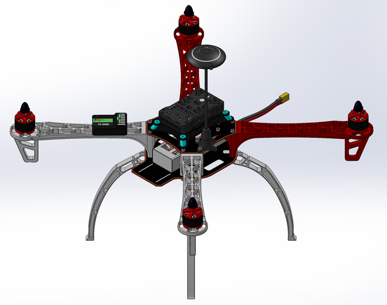
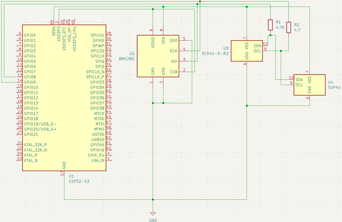

The assembled UAV platform, sensing payload integrated.
A UAV-mounted sensing platform for repeatable, waypoint-based air quality measurements over agricultural environments — designed so the sensing payload can't compromise flight safety.
Agricultural environments need air-quality data collected consistently across the same locations over time to be useful. A hand-held sensor can't do that reliably. The goal was a UAV-mounted sensing platform that integrates environmental sensors with an autonomous flight controller, enabling repeatable, waypoint-based data collection while maintaining stable flight performance.

The core design decision was architectural: the sensing and control framework is decoupled from the flight controller, so experimental data acquisition can't interfere with flight stability, safety, or deterministic flight behavior. If something goes wrong with a sensor or the data pipeline, the flight controller doesn't know or care — it keeps flying the mission.
On the electronics side, I developed the interface connecting environmental sensors to an ESP32-based data acquisition system, including I²C communication, signal conditioning, and power distribution to keep sensor readings reliable and accurate throughout a flight.
